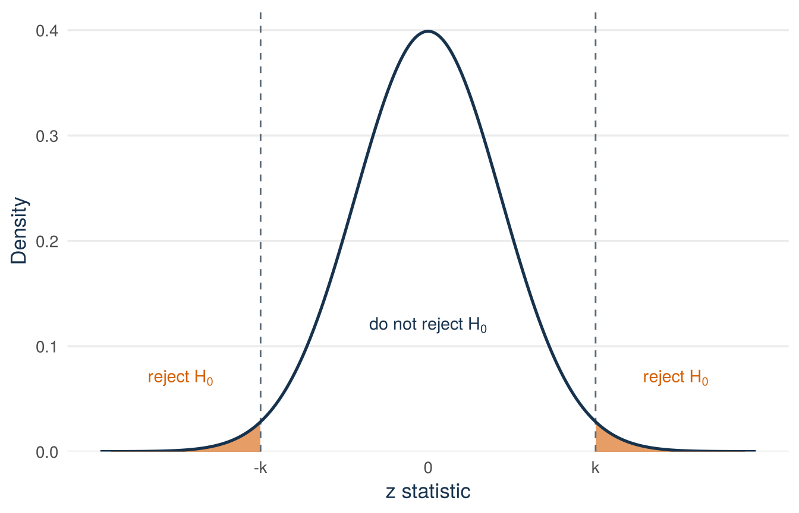
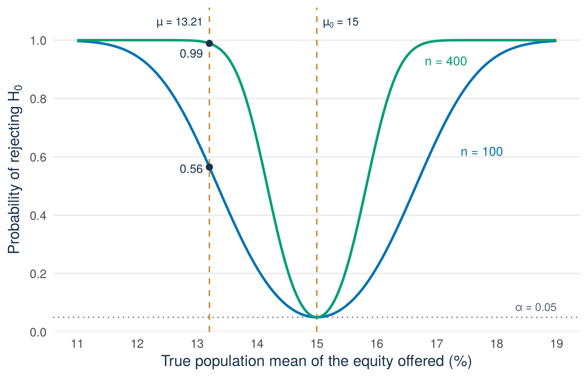

Lecture 10: Testing decisions, errors, power, and a first look at regression
By the end of Lecture 10, you can
carry out a two-sided test for a mean or a proportion
use a p-value or a confidence interval to reach the test decision
describe Type I error, Type II error, and power in context
separate statistical significance from size and causality, also in regression output
Driving question
Launch the product or wait. Approve the loan or decline. Decisions made from data can be wrong in two directions, and the two mistakes usually cost very different amounts.
How far from a claimed value must a sample lie before you reject the claim? Every such decision can be wrong in two ways. Which error is which, and what makes each of them rarer?
Shark Tank dataWarm up. Lecture 9 ended with the test statistic for the advisor’s figure of 15%, \(z_{obs}=-2.65\).
Write the two hypotheses of that test.
Say in one sentence what the number \(-2.65\) measures.
Guess: if the advisor’s figure were right, would a value this far from zero be common or rare?
Check your preparation
\(H_0:\mu=15\) against \(H_1:\mu\ne15\), where \(\mu\) is the mean of the equity offered among all 1,441 pitches in the Shark Tank file. The statistic says that the sample mean, 12.76, lies 2.65 standard deviations of the sample mean below 15. Such a value would be rare: the central 95% of the standard normal distribution lies between \(-1.96\) and \(1.96\). The lecture material turns this into a decision rule.
Predict. Answer this question before you come to class: a test ends with the decision “do not reject \(H_0\)”. Has the study shown that \(H_0\) is true: yes, no, or cannot tell? Choose one answer. You find the correct answer in the lecture material.
Lecture 9 ended with a test statistic and no decision. This section sets the rule for the decision, writes the test in five steps, and names the two ways a decision can be wrong. It ends with the same test in a regression table.
Start with a founder’s question
Shark Tank data An advisor said that founders offer 15% of their company on average. Your sample of 100 pitches says 12.76%. Should you tell the advisor that the number is wrong? And what does it cost you if you are the one who is wrong?
Shark Tank data Lecture 9 set up the two-sided test of the advisor’s figure. The parameter \(\mu\) is the mean of the equity offered (equity_offered_pct) among all 1,441 pitches in the Shark Tank file. The hypotheses are
The file is the whole population, so its standard deviation is known: \(\sigma=8.44\) percentage points. The code draws the same random sample of 100 pitches as in Lectures 7 to 9 (seed 123) and repeats the calculation of Lecture 9:
sharks <-read.csv("data/shark_tank_teaching.csv", stringsAsFactors =FALSE)# The file is the whole population, so sigma divides by N (Lecture 8)mu_equity <-mean(sharks$equity_offered_pct)sigma_equity <-sqrt(mean((sharks$equity_offered_pct - mu_equity)^2))# The random sample of 100 pitchesset.seed(123)sample_rows <-sample(seq_len(nrow(sharks)), size =100, replace =FALSE)pitch_sample <- sharks[sample_rows, ]n <-nrow(pitch_sample)x_bar <-mean(pitch_sample$equity_offered_pct) # sample meanmu_0 <-15# the advisor's figuresd_x_bar <- sigma_equity /sqrt(n) # standard deviation of the sample meanz_obs <- (x_bar - mu_0) / sd_x_barc(sigma = sigma_equity, n = n, x_bar = x_bar,sd_of_sample_mean = sd_x_bar, z_obs = z_obs)
sigma n x_bar sd_of_sample_mean
8.4414247 100.0000000 12.7600000 0.8441425
z_obs
-2.6535805
The sample mean lies 2.65 standard deviations of the sample mean below the advisor’s figure. If \(H_0\) is true, the statistic \(Z\) follows the standard normal distribution, and \(-2.65\) lies in the left tail of that curve. The open question was where to draw the line: how far from zero must \(z_{obs}\) be before we reject \(H_0\)?
This lecture answers the question in three parts. The first part gives the form of the decision rule, with the place of the line still open. The second part gives the reason that decides where the line lies. The third part gives the resulting procedure, first with \(\sigma\) known and then with \(\sigma\) replaced by \(S\), as in every real study.
A decision rule with an unknown constant
The alternative \(H_1:\mu\ne15\) says that \(\mu\) is either below 15 or above 15. Evidence for \(H_1\) is a sample mean far below 15 or far above 15. The test statistic is then far from zero, on the negative or on the positive side. So the test should reject \(H_0\) when \(|z_{obs}|\) is large. The bars stand for the absolute value: the distance of \(z_{obs}\) from zero, without the sign. The decision rule has the form
\[
\text{reject }H_0\quad\text{if}\quad |z_{obs}|\ge k
\]
for some positive number \(k\). The set of values of the test statistic for which we reject \(H_0\) is called the rejection region. Here it has two parts: all values at or below \(-k\), and all values at or above \(k\). Figure 13.1 shows them as the two tails of the curve.
See the R code for this figure
library(ggplot2)k_shown <-2.3# only for the drawing: k is not fixed yetz_curve <-data.frame(z =seq(-4.5, 4.5, length.out =1200))z_curve$density <-dnorm(z_curve$z)ggplot(z_curve, aes(z, density)) +geom_area(data =subset(z_curve, z <=-k_shown),fill ="#D55E00", alpha =0.6) +geom_area(data =subset(z_curve, z >= k_shown),fill ="#D55E00", alpha =0.6) +geom_vline(xintercept =c(-k_shown, k_shown), linetype ="dashed",colour ="#5B6976", linewidth =0.5) +geom_line(colour ="#17324D", linewidth =0.9) +annotate("text", x =c(-3.4, 3.4), y =0.07, label ="reject~H[0]",parse =TRUE, colour ="#D55E00", size =3.8) +annotate("text", x =0, y =0.12, label ="do~not~reject~H[0]",parse =TRUE, colour ="#17324D", size =3.8) +scale_x_continuous(breaks =c(-k_shown, 0, k_shown),labels =c("-k", "0", "k")) +scale_y_continuous(expand =expansion(mult =c(0, 0.05))) +labs(x ="z statistic", y ="Density") +theme_minimal(base_size =13) +theme(panel.grid.minor =element_blank(),panel.grid.major.x =element_blank(),plot.caption =element_text(colour ="#5B6976"),axis.title =element_text(colour ="#17324D") )

Figure 13.1: The form of the two-sided decision rule, on the standard normal curve that the statistic follows if the null hypothesis is true. The null hypothesis is rejected when the observed value falls in one of the two orange tails, at or below −k or at or above k. The number k is not yet fixed.
Any positive \(k\) gives a rule. A small \(k\) rejects \(H_0\) for almost every sample, even when \(\mu\) really is 15. A large \(k\) almost never rejects, even when \(\mu\) is far from 15. Neither rule is useful. The right value of \(k\) follows from the ways in which the decision can be wrong.
How large must \(k\) be? Type I error and the significance level
A test is a decision rule, and a decision can be wrong in two ways:
Reality
Reject \(H_0\)
Do not reject \(H_0\)
\(H_0\) is true
Type I error
Correct decision
\(H_1\) is true
Correct decision
Type II error
After the decision “do not reject \(H_0\)”, only a Type II error is possible. After the decision “reject \(H_0\)”, only a Type I error is possible.
Definition
Type I error and Type II error. A Type I error is rejecting \(H_0\) when \(H_0\) is true. It is a false alarm: you claim a difference that is not there. A Type II error is not rejecting \(H_0\) when \(H_1\) is true. It is a missed difference.
In the advisor’s example, a Type I error would be to conclude that the mean equity offered differs from 15% when it is exactly 15%. A Type II error would be to miss that the figure is wrong, for example because the sample is small or because the true mean is close to 15.
Both errors are unwanted. With a fixed sample size you cannot make both of them small at the same time. A smaller rejection region gives fewer false alarms but more missed differences. A larger rejection region does the opposite. The standard solution is to control the Type I error. We build the test so that the probability of a false alarm is at most a small number that we choose in advance.
Definition
Significance level \(\alpha\). The largest probability of a Type I error that the test allows: \(P(\text{reject }H_0\mid H_0\text{ true})\le\alpha\). The standard choice is \(\alpha=0.05\). Other common choices are \(\alpha=0.10\) and \(\alpha=0.01\). You fix the level before you look at the data.
Why control the Type I error and not the Type II error? A Type I error claims a discovery that is not there. A method that produces false discoveries at an unknown rate is of little use. With \(\alpha\) fixed, every rejection comes with a known risk. Over many tests, a test at \(\alpha=0.05\) rejects at most 5% of the null hypotheses that are true. This makes “reject \(H_0\)” the strong conclusion. The Type II error comes back later in this lecture, in the section on power. It is the reason why “do not reject \(H_0\)” is the weak conclusion.
Now we can choose \(k\). If \(H_0\) is true, \(Z\) follows the standard normal distribution. This holds exactly for a normal population and approximately for a large sample, by the central limit theorem of Lecture 8. With the rule “reject \(H_0\) if \(|Z|\ge k\)”, the probability of a Type I error is the area of the two tails beyond \(-k\) and \(k\). The normal curve is symmetric, so the two tails have the same area. The total must be \(\alpha\), so each tail gets \(\alpha/2\). The value with an area of \(\alpha/2\) to its right has an area of \(1-\alpha/2\) to its left. That is the quantile \(z_{1-\alpha/2}\) of Lecture 6:
\[
k=z_{1-\alpha/2}.
\]
Optional: the calculation of the constant in symbols
If \(H_0\) is true, the probability of a Type I error with the rule “reject \(H_0\) if \(|Z|\ge k\)” is
The last step uses the symmetry of the normal curve. Setting this probability equal to \(\alpha\) gives \(P(Z\ge k)=\alpha/2\), so \(P(Z\le k)=1-\alpha/2\). By the definition of a quantile, \(k=z_{1-\alpha/2}\).
This number is called the critical value of the test. It is the same value that the confidence interval with \(\sigma\) known used in Lecture 9. Each of the two cut-offs \(-z_{1-\alpha/2}\) and \(z_{1-\alpha/2}\) leaves a probability of \(\alpha/2\) in its tail. Together the rejection region has probability exactly \(\alpha\) when \(H_0\) is true.
# Critical values for alpha = 0.10, 0.05, and 0.01qnorm(c(0.95, 0.975, 0.995))
[1] 1.644854 1.959964 2.575829
For \(\alpha=0.05\) the critical value is \(z_{0.975}=1.960\). For \(\alpha=0.01\) it is \(z_{0.995}=2.576\), and for \(\alpha=0.10\) it is \(z_{0.95}=1.645\). Figure 13.2 shows the rule for \(\alpha=0.05\).
Figure 13.2: The constant is fixed. Each orange tail of the standard normal curve has probability α/2 = 0.025, so the rejection region beyond −1.96 and 1.96 has probability α = 0.05 when the null hypothesis is true. The observed value −2.65 (blue line) lies in the left part of the rejection region.
The five steps of a test, first with σ known
Everything that a test needs is now in place. Every test in this course is written in the same five steps, and most tests in QM Intermediate follow them too. The version below uses \(\sigma\) and the standard normal distribution. It is the first step only: it shows the logic in the simplest case. In practice \(\sigma\) is unknown. The version of the next section, with \(s\) and \(t\), is the one that you use from then on.
For a two-sided test of a mean with \(\sigma\) known:
Hypotheses. \(H_0:\mu=\mu_0\) versus \(H_1:\mu\ne\mu_0\). State the significance level \(\alpha\).
Test statistic. \(Z=\dfrac{\bar X-\mu_0}{\sigma/\sqrt n}\), which follows the standard normal distribution if \(H_0\) is true (normal population, or large \(n\)).
Critical value and rejection region. Reject \(H_0\) if \(|z_{obs}|\ge z_{1-\alpha/2}\).
Observed value. Calculate \(z_{obs}\) from the sample.
Conclusion. “Reject \(H_0\)” or “do not reject \(H_0\)”, and what this means in the words of the question.
You fix steps 1 to 3 before you look at the data. You use the data only from step 4.
Example 13.1 (Worked example: the advisor’s figure with σ known, at the 5% level)Shark Tank data This version with \(\sigma\) is only the first step. In practice \(\sigma\) is unknown.
Hypotheses.\(H_0:\mu=15\) versus \(H_1:\mu\ne15\), where \(\mu\) is the mean equity offered among all pitches in the Shark Tank file. The significance level is \(\alpha=0.05\).
Test statistic.\(Z=(\bar X-15)/(8.44/\sqrt{100})=(\bar X-15)/0.844\). The equity offered is skewed, so the population is not normal. But \(n=100\) is large, so by the central limit theorem \(Z\) is approximately standard normal if \(H_0\) is true.
Critical value and rejection region.\(z_{0.975}=1.96\). Reject \(H_0\) if \(z_{obs}\le-1.96\) or \(z_{obs}\ge1.96\).
Observed value. The standard deviation of the sample mean is \(8.44/\sqrt{100}=0.844\). So \(z_{obs}=(12.76-15)/0.844=-2.65\).
Conclusion.\(-2.65\le-1.96\), so the observed value lies in the rejection region. Reject \(H_0\). At the 5% level we can conclude that the mean equity offered differs from 15%. The negative sign of \(z_{obs}\) shows that it is below 15%.
At \(\alpha=0.01\) the critical value is \(z_{0.995}=2.576\). Since \(2.65\ge2.576\), we reject \(H_0\) at the 1% level as well, but only by a small margin.
In practice σ is unknown
Shark Tank data The test above used the population standard deviation \(\sigma\). It is known here only because the Shark Tank file is the whole population. A real study has a sample and nothing else. It does not know \(\sigma\), just as it does not know \(\mu\). The solution is the same as for the interval in Lecture 9: replace \(\sigma\) by the sample standard deviation \(S\). The denominator is then the standard error \(S/\sqrt n\), and the test statistic becomes
\[
T=\frac{\bar X-\mu_0}{S/\sqrt n}.
\]
Lecture 9 showed what this change does to the distribution. There are two situations.
The population is normal. Then \(T\) follows exactly the t distribution with \(n-1\) degrees of freedom, written \(t_{n-1}\), if \(H_0\) is true. Its tails are heavier than those of the standard normal curve, because \(S\) varies from sample to sample. We find the critical value as before, now on the t curve: \(k=t_{1-\alpha/2,\,n-1}\). This is the critical value of the t interval.
The population is not normal, but \(n\) is large. Then \(T\) is approximately standard normal if \(H_0\) is true. For a large \(n\) the \(t_{n-1}\) curve is almost the same as the standard normal curve. So we can use the t critical value here too, and one rule covers both situations.
# Critical values for alpha = 0.05 and alpha = 0.01, with n = 100c(t_0.975 =qt(0.975, df =99), z_0.975 =qnorm(0.975),t_0.995 =qt(0.995, df =99), z_0.995 =qnorm(0.995))
At \(n=100\) the two are close: \(t_{0.975,\,99}=1.984\) against \(z_{0.975}=1.960\), and \(t_{0.995,\,99}=2.626\) against \(z_{0.995}=2.576\).
So the rule for tests is the rule for intervals: when \(\sigma\) is unknown, use \(S\) and the \(t_{n-1}\) distribution, whatever the sample size. The rule is exact for a normal population and almost exact for a large sample. It does not cover a small sample from a population that is not normal. In that case there is no critical value that we can justify. This is why you check the conditions before you run a test.
In practice \(\sigma\) is unknown, so a test for a mean uses \(s\) and \(t\).
The optional box of Lecture 9 shows why the t value also works for a large sample from a population that is not normal.
The five steps stay the same. Only the statistic and the critical value change. The box below gives the steps in the form of a complete answer. It also names the p-value and the test for a proportion. Both follow later in this lecture.
Exam procedure: the five steps of a test
Write these five steps, in this order.
Hypotheses.\(H_0:\mu=\mu_0\) versus \(H_1:\mu\ne\mu_0\) (or \(p\) and \(p_0\)). Say in words what the parameter is. State the significance level \(\alpha\).
Test statistic. The formula and its distribution if \(H_0\) is true, with the condition. Mean: \(T=(\bar X-\mu_0)/(S/\sqrt n)\), which has the \(t_{n-1}\) distribution (normal population, or large \(n\)). Proportion: \(Z=(\widehat P-p_0)/\sqrt{p_0(1-p_0)/n}\), approximately \(N(0,1)\) if \(np_0\ge10\) and \(n(1-p_0)\ge10\).
Critical value and rejection region.\(t_{1-\alpha/2,\,n-1}\) or \(z_{1-\alpha/2}\), from the question or the formula sheet. Reject \(H_0\) if the observed value is at or below minus the critical value, or at or above the critical value.
Observed value. Calculate the denominator first, then \(t_{obs}\) or \(z_{obs}\).
Conclusion. Say whether the observed value lies in the rejection region. Write “reject \(H_0\)” or “do not reject \(H_0\)”, never “accept \(H_0\)”. Then one sentence in the words of the question: “At the \(\alpha\) level we can (cannot) conclude that …”. If you reject, add the direction from the sign of the observed value.
The p-value, when the question asks for it, comes after step 5: \(2\,P(T\ge|t_{obs}|)\) or \(2\,P(Z\ge|z_{obs}|)\). It gives the same decision: \(p\le\alpha\) exactly when the observed value lies in the rejection region.
A complete answer gives all five steps of the testing procedure in this order. Number them 1 to 5 and write the formula of the statistic and the rejection region before the numbers.
Now test the advisor’s figure again, using only what the sample gives. The code calculates the sample standard deviation, the standard error, the observed value, and the critical values:
s <-sd(pitch_sample$equity_offered_pct) # sample standard deviationse <- s /sqrt(n) # standard error of the sample meandf <- n -1t_obs <- (x_bar - mu_0) / sec(s = s, standard_error = se, df = df, t_obs = t_obs,critical_5_percent =qt(0.975, df = df),critical_1_percent =qt(0.995, df = df))
Example 13.2 (Worked example: the advisor’s figure with s and t, at the 5% level)Shark Tank data The sample gives \(n=100\), \(\bar x=12.76\), and \(s=7.71\).
Hypotheses.\(H_0:\mu=15\) versus \(H_1:\mu\ne15\), where \(\mu\) is the mean equity offered among all pitches in the Shark Tank file. The significance level is \(\alpha=0.05\).
Test statistic.\(T=(\bar X-15)/(S/\sqrt{100})\). The equity offered is strongly skewed, so the population is not normal. But \(n=100\) is large, so \(T\) has approximately the \(t_{99}\) distribution if \(H_0\) is true.
Critical value and rejection region.\(t_{0.975,\,99}=1.984\). The formula sheet lists \(df=100\) as the closest value, which gives the same number. Reject \(H_0\) if \(t_{obs}\le-1.984\) or \(t_{obs}\ge1.984\).
Observed value. The standard error is \(s/\sqrt n=7.71/10=0.771\). So \(t_{obs}=(12.76-15)/0.771=-2.91\).
Conclusion.\(-2.91\le-1.984\), so the observed value lies in the rejection region. Reject \(H_0\). At the 5% level we can conclude that the mean equity offered differs from 15%. The negative sign of \(t_{obs}\) shows that it is below 15%.
At \(\alpha=0.01\) the critical value is \(t_{0.995,\,99}=2.626\). Since \(2.91\ge2.626\), we reject \(H_0\) at the 1% level too.
Two numbers changed between the two versions. The critical value moved from 1.96 to 1.984. This is the small price of using \(S\). The statistic moved from \(-2.65\) to \(-2.91\), because the standard deviation of this sample, 7.71, happens to be smaller than the 8.44 of the population. Another sample would have another \(s\) and another \(t_{obs}\). The heavier tails of the t curve take this variation in \(S\) into account.
The confidence interval and the test give the same decision
Shark Tank data The critical value of the test is the value that the interval uses, and the standard error is the same. So the two procedures always agree for a mean. The test rejects \(H_0\) when the distance between \(\bar x\) and \(\mu_0\) is at least the critical value times the standard error. This product is the margin of error of the interval. And \(\bar x\) lies at least one margin of error away from \(\mu_0\) exactly when \(\mu_0\) is not inside the interval.
For the two-sided test of a mean:
reject \(H_0:\mu=\mu_0\) at level \(\alpha\) exactly when the \(100(1-\alpha)\%\) confidence interval does not contain \(\mu_0\)
do not reject \(H_0\) exactly when the interval contains \(\mu_0\).
# The 95% confidence interval of Lecture 9x_bar +c(-1, 1) *qt(0.975, df = df) * se
[1] 11.23059 14.28941
The 95% interval \((11.23,\,14.29)\) does not contain 15, and the test at the 5% level rejects. The interval says more than the decision. It shows the direction of the difference, its plausible size, and the precision of the estimate. The decision only says that 15 is excluded. In this course and in QM Intermediate, always report the estimate and its interval together with the test decision.
Optional: the link between test and interval in symbols
The right-hand side is the margin of error. The distance between \(\bar x\) and \(\mu_0\) is at least the margin exactly when \(\mu_0\) lies at an end of the interval or outside it:
Exam procedure: a test question answered with an interval
Some questions ask whether a value \(\mu_0\) is plausible and tell you to use a confidence interval. Then construct the interval in its five parts and conclude from where \(\mu_0\) lies. For a mean, this gives the same decision as the two-sided test at level \(\alpha\). For a proportion the two can differ slightly, because the interval uses \(\hat p\) and the test uses \(p_0\). Use the procedure that the question names.
Try it: read the decision directly from an interval
Try this with your neighbour first. An invented example. A colleague reports a 95% confidence interval for a population mean: \((13.6,\,18.8)\)%. The value under test is \(\mu_0=15\). The report gives no t statistic and no p-value.
Given. The two-sided t test at the 5% level rejects \(H_0:\mu=15\) exactly when the 95% interval does not contain 15.
Question 1 (you). Does this interval contain 15? State the test decision without a calculation.
Question 2 (you). What may you conclude about \(\mu\), and what may you not conclude?
Check your answer
The value 15 lies inside \((13.6,\,18.8)\), so the test at the 5% level does not reject \(H_0:\mu=15\). The data are compatible with \(\mu=15\), and also with values as low as 13.6 and as high as 18.8. You may not conclude that \(\mu\) is 15. “Do not reject” is not “accept”. The section on power below gives the reason.
The p-value: a second reading of the same decision
Shark Tank data The advisor’s test rejected \(H_0\) at \(\alpha=0.05\) and again at \(\alpha=0.01\). There is a pattern here. If a test rejects \(H_0\) at one level \(\alpha\), it also rejects \(H_0\) at every larger level, because a larger \(\alpha\) gives a larger rejection region. So for a given sample there is a smallest significance level at which the test still rejects \(H_0\). This number measures the evidence against \(H_0\) on a continuous scale.
Definition
p-value. The smallest significance level at which \(H_0\) is rejected with the observed data. For a two-sided test it is the probability, calculated as if \(H_0\) were true, of a test statistic at least as far from zero as the observed one, in either direction: \(p=P(|T|\ge|t_{obs}|)=2\,P(T\ge|t_{obs}|)\), where \(T\) follows the \(t_{n-1}\) distribution.
The two descriptions give the same number. At level \(\alpha\), the test rejects when \(|t_{obs}|\) is at least the critical value. Suppose that \(|t_{obs}|\) lies exactly on the critical value. Then the two tails beyond \(-|t_{obs}|\) and \(|t_{obs}|\) have a total area of exactly \(\alpha\). With any smaller \(\alpha\), the critical value moves beyond \(|t_{obs}|\) and the test no longer rejects. So the smallest \(\alpha\) that rejects is the area of the two tails beyond the observed value.
In R, pt() gives the area under a t curve to the left of a value, and pnorm() does the same for the standard normal curve. The area of the two tails is twice the area to the left of \(-|t_{obs}|\):
p_value <-2*pt(-abs(t_obs), df = df) # test with s and tp_value_sigma <-2*pnorm(-abs(z_obs)) # first step, sigma knownc(t_obs = t_obs, p_value = p_value)
Figure 13.3: The p-value of the advisor’s test as an area under the t curve with 99 degrees of freedom, the distribution of the statistic if the null hypothesis is true. Dashed lines mark −2.91 and 2.91, the values as far from zero as the observed one. Each blue tail holds half of the p-value. Together the two tails have area 0.0045.
The curve in Figure 13.3 is not data. It is the distribution of the t statistic if \(H_0\) were true. The vertical axis is density, so a probability is an area. The two blue tails beyond the dashed lines are very small. If the mean equity offered were 15%, a sample mean this far from 15 would occur in fewer than 1 of 200 random samples.
The p-value is a second way to state the decision. It is not a different decision:
For the advisor’s test, \(p=0.0045\). Since \(0.0045\le0.05\), reject \(H_0\) at the 5% level. Since \(0.0045\le0.01\), reject at the 1% level too. Since \(0.0045>0.001\), do not reject at the 0.1% level. With \(\sigma\) known, the same definition gives \(p=2\,P(Z\ge2.65)=0.008\), with the same three decisions.
The critical value gives the decision at one level \(\alpha\). The p-value gives the decision at every level at once, and it says how surprising the sample would be if \(H_0\) were true. The significance level and the p-value are different concepts. The level \(\alpha\) is a rule, fixed in advance. The p-value is a result, calculated from the observed data.
Reading the test from software
Shark Tank data Software prints the p-value and not the critical value. So the p-value is the number that you will see most often. In R, the command t.test() runs the test of this lecture on the sample of 100 pitches:
t.test(pitch_sample$equity_offered_pct, mu =15)
One Sample t-test
data: pitch_sample$equity_offered_pct
t = -2.9061, df = 99, p-value = 0.004515
alternative hypothesis: true mean is not equal to 15
95 percent confidence interval:
11.23059 14.28941
sample estimates:
mean of x
12.76
Every line is something that you have calculated by hand. t is the observed value of step 4, and df is \(n-1\). p-value is the area of the two tails. The line alternative hypothesis: true mean is not equal to 15 says that the test is two-sided with \(\mu_0=15\). The interval is the 95% confidence interval of Lecture 9, and mean of x is \(\bar x\). You make the decision yourself, by comparing the p-value with \(\alpha\). Software does not choose \(\alpha\) for you.
What a p-value is not
The p-value is the probability of data at least this far from \(H_0\), calculated as if \(H_0\) were true. It is nothing else. The task below gives four sentences that claim more than the p-value says. All four are wrong.
Try it: correct the four wrong p-value sentences
Shark Tank data Try this with your neighbour first. The four sentences are about the advisor’s test (\(t_{obs}=-2.91\), \(p=0.0045\)). Each one is wrong. Write a correct version of each sentence.
Sentence 1 (you). “There is only a 0.45% probability that the mean equity offered really is 15%.”
Sentence 2 (you). “The result has a 0.45% probability of being due to chance.”
Sentence 3 (you). “Such a tiny p-value shows that the mean equity offered is far below 15%.”
Sentence 4 (you). “The tiny p-value proves that founders have become more careful in what they offer.”
Check your answers
A p-value is not the probability that \(H_0\) is true. Correct: “If the mean equity offered were exactly 15%, a sample mean at least this far from 15 would occur in about 0.45% of random samples of 100 pitches.”
The p-value is calculated under the assumption that \(H_0\) is true and chance alone produced the difference. It is the probability of such data under that assumption. It is not the probability that the assumption holds. Correct: “If chance alone were at work, a difference this large would occur in about 0.45% of random samples.”
A p-value measures how surprising the data are if \(H_0\) is true. It does not measure the size of the difference. The size is the estimate, 12.76%, with the interval \((11.23,\,14.29)\) around it. A tiny p-value can go together with a tiny difference when \(n\) is very large. Correct: “The mean equity offered is estimated at 12.76%, plausibly between 11.2% and 14.3%.”
A significant result says nothing about the cause. The test does not know how the data came about, and it compares one mean with one number. Correct: “The mean equity offered among the pitches in the file differs from 15%.”
Type II error and power
Shark Tank data The rule “reject \(H_0\) if \(|t_{obs}|\ge1.984\)” keeps the probability of a false alarm at 5%. It says nothing about the other mistake: not rejecting \(H_0\) when \(H_1\) is true. How often does that happen? The answer depends on how far the true value lies from \(\mu_0\). So we calculate it for one given alternative value.
Definition
Power. The probability that the test rejects \(H_0\) when a given alternative value of the parameter is true: \(\text{power}=P(\text{reject }H_0\mid\text{that value is true})\). The probability of a Type II error at that value is written \(\beta\), and \(\text{power}=1-\beta\).
The calculation below is an illustration. Read it to see where a power comes from. You are not asked to calculate a power yourself.
The Shark Tank file makes the idea concrete, because the population is known: \(\mu=13.21\) and \(\sigma=8.44\). A power is usually calculated with \(\sigma\) known, and here \(\sigma\) really is known. The true mean is 13.21, so the advisor’s figure of 15 is wrong. How often would a random sample of 100 pitches lead the test at the 5% level to reject it? The test rejects when \(|z_{obs}|\ge1.96\), that is, when the sample mean is far enough from 15:
Since \(\mu=13.21\), the sample mean \(\bar X\) is approximately normal with mean 13.21 and standard deviation 0.844 (Lecture 8). The code calculates the probability that \(\bar X\) falls at or below 13.35 or at or above 16.65:
# Cut-offs of the 5% test for the sample mean, n = 100lower_cut <- mu_0 -1.96* sd_x_barupper_cut <- mu_0 +1.96* sd_x_bar# Probability of a sample mean beyond a cut-off when mu = 13.21power_100 <-pnorm(lower_cut, mean = mu_equity, sd = sd_x_bar) + (1-pnorm(upper_cut, mean = mu_equity, sd = sd_x_bar))c(mu = mu_equity, lower_cut = lower_cut, upper_cut = upper_cut,z_at_lower_cut = (lower_cut - mu_equity) / sd_x_bar, power = power_100)
mu lower_cut upper_cut z_at_lower_cut power
13.2076128 13.3454808 16.6545192 0.1633231 0.5648902
Standardising the lower cut-off with the unrounded numbers gives
\[
P(\bar X\le13.35)=P(Z\le0.16)\approx0.56.
\]
The probability of a sample mean at or above 16.65 is practically zero. So the power is about 0.56. When the true mean is 13.21, a sample of 100 pitches rejects the advisor’s figure in 56% of all samples and misses the difference in 44%. The true difference is 1.79 percentage points, about 12% of the advisor’s figure. Almost half of all samples miss it. Figure 13.4 shows the two situations.
Figure 13.4: The two errors of the 5% test of the advisor’s figure with σ = 8.44 known, on the scale of the sample mean. Left: if the null hypothesis is true, the sample mean follows the dark curve centred at 15, and the orange tails beyond the cut-offs 13.35 and 16.65 have total probability α = 0.05. Right: the true mean is 13.21, so the sample mean follows the blue curve. The green area is the power, about 0.56. The rest of the blue curve, between the cut-offs, is the Type II error probability β, about 0.44.
Four factors raise the power of a test:
A larger true difference. The further \(\mu\) lies from \(\mu_0\), the more of the curve in the right panel falls into the rejection region.
A larger sample. The standard deviation of the sample mean falls with \(\sqrt n\). Both curves become narrower and overlap less.
Less variation in the population. A smaller \(\sigma\) has the same effect as a larger \(n\).
A larger \(\alpha\). A wider rejection region finds more true differences, but it also gives more false alarms. Power and the probability of a Type I error rise together. This trade-off cannot be avoided.
The code repeats the calculation for a sample of 400 pitches:
sd_of_sample_mean lower_cut power
0.4220712 14.1727404 0.9888918
With \(n=400\) the standard deviation of the sample mean halves to 0.422. The lower cut-off moves to 14.17, and the power when \(\mu=13.21\) rises to about 0.99. Figure 13.5 shows the power for every true mean between 11 and 19.
See the R code for this figure
library(ggplot2)power_of_test <-function(mu, n) { sd_mean <- sigma_equity /sqrt(n)pnorm(mu_0 -1.96* sd_mean, mean = mu, sd = sd_mean) +1-pnorm(mu_0 +1.96* sd_mean, mean = mu, sd = sd_mean)}power_grid <-data.frame(mu =rep(seq(11, 19, length.out =400), times =2),n =rep(c(100, 400), each =400))power_grid$power <-power_of_test(power_grid$mu, power_grid$n)power_grid$sample <-factor(paste("n =", power_grid$n))power_points <-data.frame(mu = mu_equity, n =c(100, 400))power_points$power <-power_of_test(power_points$mu, power_points$n)ggplot(power_grid, aes(mu, power)) +geom_hline(yintercept =0.05, linetype ="dotted", colour ="#5B6976") +geom_vline(xintercept =c(mu_equity, mu_0), linetype ="dashed",colour ="#C98B2E", linewidth =0.6) +geom_line(aes(colour = sample), linewidth =1) +geom_point(data = power_points, colour ="#17324D", size =2.2) +annotate("text", x =13.1, y =c(0.56, 0.955), label =c("0.56", "0.99"),colour ="#17324D", size =3.6, hjust =1) +annotate("text", x =17.4, y =0.62, label ="n = 100",colour ="#0072B2", size =3.8, hjust =0) +annotate("text", x =16.8, y =0.93, label ="n = 400",colour ="#009E73", size =3.8, hjust =0) +annotate("text", x =19, y =0.085, label ="alpha == 0.05", parse =TRUE,colour ="#5B6976", size =3.4, hjust =1) +annotate("text", x =13.1, y =1.06, label ="mu == 13.21", parse =TRUE,colour ="#17324D", size =3.4, hjust =1) +annotate("text", x =15.1, y =1.06, label ="mu[0] == 15", parse =TRUE,colour ="#17324D", size =3.4, hjust =0) +scale_colour_manual(values =c("n = 100"="#0072B2","n = 400"="#009E73"),guide ="none") +scale_x_continuous(breaks =11:19) +scale_y_continuous(breaks =seq(0, 1, 0.2), limits =c(0, 1.09),expand =expansion(mult =c(0, 0.02))) +labs(x ="True population mean of the equity offered (%)",y =expression("Probability of rejecting "* H[0])) +theme_minimal(base_size =13) +theme(panel.grid.minor =element_blank(),panel.grid.major.x =element_blank(),plot.caption =element_text(colour ="#5B6976"),axis.title =element_text(colour ="#17324D") )

Figure 13.5: Power of the 5% two-sided test of the advisor’s figure of 15 with σ = 8.44 known, for every true mean between 11 and 19 and for two sample sizes. At a true mean of 15 both curves are at α = 0.05: there the probability of rejecting is the probability of a Type I error. Away from 15 the curves rise, and faster for the larger sample. At the true mean 13.21 the power is 0.56 for n = 100 and 0.99 for n = 400.
This is why “do not reject \(H_0\)” is the weak conclusion. With a power of 0.56, almost half of the samples do not reject \(H_0\), although the advisor’s figure is wrong by almost two percentage points. So a sample that does not reject is weak evidence that the advisor is right. The test controls the probability of a false alarm. It does not promise to detect a difference that exists. This answers the prediction question from the preparation: a study that ends with “do not reject \(H_0\)” has not shown that \(H_0\) is true. It is one more reason to report the estimate with its interval. The interval shows how large a difference the sample could have missed.
A test for a proportion
Shark Tank data The deal indicator (deal_on_show) is a 0/1 variable. The question “do half of all pitches end with a deal?” is a test about the proportion \(p\) of pitches with a deal among all pitches in the file:
with \(p_0=0.50\). The test statistic is built as for a mean. It is the distance between the estimate and the value under \(H_0\), divided by a standard deviation. One feature makes the test for a proportion simpler.
The standard deviation of \(\widehat P\) under \(H_0\) is a known number. For a 0/1 variable the spread is not a separate parameter: \(\operatorname{SD}(\widehat P)=\sqrt{p(1-p)/n}\) depends on \(p\) alone (Lecture 8). If \(H_0\) is true, then \(p=p_0\), so
This number is calculated from \(p_0\) and \(n\). We do not estimate anything. There is no \(\sigma\) to replace by \(S\), so there is no t distribution. If \(np_0\ge10\) and \(n(1-p_0)\ge10\), the statistic
is approximately standard normal when \(H_0\) is true, by the central limit theorem. The critical value is \(z_{1-\alpha/2}\), which is 1.96 at the 5% level for every sample size. Check the success-failure rule of Lecture 8 with \(p_0\), because we use the approximation under the assumption that \(H_0\) is true.
Here the test differs from the interval for a proportion of Lecture 9. The interval had to use \(\hat p\) under the square root, because no value of \(p\) was given. That is the standard error. The test has a given value, \(p_0\), and uses it. The test asks how surprising the sample would be if \(H_0\) were true, so the spread comes from \(H_0\). The two numbers are close when \(\hat p\) is close to \(p_0\). Because they are not equal, the interval and the test for a proportion can sometimes disagree when the observed value lies close to the critical value.
The five steps are those of the exam procedure above, with \(Z\) and \(z_{1-\alpha/2}\). The code applies them to the sample of 100 pitches:
phat <-mean(pitch_sample$deal_on_show) # sample deal proportionp0 <-0.50# value under H0c(n = n, deals =sum(pitch_sample$deal_on_show), phat = phat, p0 = p0)
n deals phat p0
100.00 64.00 0.64 0.50
sd_0 <-sqrt(p0 * (1- p0) / n) # standard deviation of P-hat under H0z_obs_p <- (phat - p0) / sd_0p_value_p <-2*pnorm(-abs(z_obs_p))c(sd_under_H0 = sd_0, z_obs = z_obs_p, p_value = p_value_p)
Example 13.3 (Worked example: the deal proportion in five steps)Shark Tank data In the sample, 64 of the 100 pitches end with a deal, so \(\hat p=0.64\). Does the deal proportion among all pitches in the file differ from one half? Test at the 5% level.
Hypotheses.\(H_0:p=0.50\) versus \(H_1:p\ne0.50\), where \(p\) is the proportion of pitches that end with a deal among all pitches in the Shark Tank file. The significance level is \(\alpha=0.05\).
Test statistic.\(Z=(\widehat P-0.50)/\sqrt{0.50\times0.50/100}\). Since \(np_0=50\) and \(n(1-p_0)=50\) are both at least 10, \(Z\) is approximately \(N(0,1)\) if \(H_0\) is true.
Critical value and rejection region.\(z_{0.975}=1.96\). Reject \(H_0\) if \(z_{obs}\le-1.96\) or \(z_{obs}\ge1.96\).
Observed value. The denominator is the standard deviation of \(\widehat P\) under \(H_0\): \(\sqrt{0.50\times0.50/100}=0.05\). So \(z_{obs}=(0.64-0.50)/0.05=2.80\).
Conclusion.\(2.80\ge1.96\), so the observed value lies in the rejection region. Reject \(H_0\). At the 5% level we can conclude that the deal proportion differs from 50%. The positive sign of \(z_{obs}\) shows that it is above 50%.
The p-value.\(p=2\,P(Z\ge2.80)=0.005\). If \(H_0\) were true, a sample proportion at least 14 percentage points away from one half, in either direction, would occur in about 5 of 1,000 samples. Since \(0.005\le0.05\), the p-value gives the same decision.
Report the interval too. The 95% interval of Lecture 9 uses the standard error \(\sqrt{0.64\times0.36/100}=0.048\). It is \(0.64\pm1.96\times0.048=(0.546,\,0.734)\). Between about 55% and 73% of the pitches end with a deal. The interval does not contain 0.50, in line with the decision.
In R, the command prop.test() runs this test. The argument correct = FALSE switches off a small correction that is not part of this course:
prop.test(x =64, n =100, p =0.50, correct =FALSE)
1-sample proportions test without continuity correction
data: 64 out of 100, null probability 0.5
X-squared = 7.84, df = 1, p-value = 0.00511
alternative hypothesis: true p is not equal to 0.5
95 percent confidence interval:
0.5423540 0.7272878
sample estimates:
p
0.64
R reports the statistic as X-squared = 7.84. This is the square of \(z_{obs}\): \(2.80^2=7.84\). The p-value is the same, 0.005. R builds its interval with a slightly different method, so its ends, 0.542 and 0.727, differ a little from those of Lecture 9. Both intervals are acceptable. By hand, use the method of Lecture 9.
Optional: why the interval and the test for a proportion divide by different numbers
For a mean, the test and the interval use the same standard error, \(s/\sqrt n\), because \(\sigma\) must be estimated in both. For a proportion they do not use the same number. The interval uses the standard error \(\sqrt{\hat p(1-\hat p)/n}\), the only choice when no value of \(p\) is given. The test uses the standard deviation of \(\widehat P\) under \(H_0\), \(\sqrt{p_0(1-p_0)/n}\), because it judges the sample as if \(p=p_0\) were true. In the deal example these are 0.048 and 0.050. One consequence: for a proportion, the rule “reject \(H_0\) at level \(\alpha\) exactly when the interval does not contain \(p_0\)” holds only approximately. It can fail when the observed value lies close to the critical value.
The second example uses other numbers and a business claim.
Example 13.4 (Worked example: a proportion test by hand) An invented example. A language-learning app claims that half of its new users are still active after 30 days. In a random sample of 400 users who signed up last year, 232 were still active after 30 days. Test the claim at the 5% level.
Hypotheses.\(H_0:p=0.50\) versus \(H_1:p\ne0.50\), where \(p\) is the proportion of users who are still active after 30 days among all new users of last year. The significance level is \(\alpha=0.05\).
Test statistic.\(Z=(\widehat P-0.50)/\sqrt{0.50\times0.50/400}\). Since \(np_0=400\times0.50=200\) and \(n(1-p_0)=200\) are both at least 10, \(Z\) is approximately \(N(0,1)\) if \(H_0\) is true.
Critical value and rejection region.\(z_{0.975}=1.96\). Reject \(H_0\) if \(z_{obs}\le-1.96\) or \(z_{obs}\ge1.96\).
Observed value. The denominator is \(\sqrt{0.50\times0.50/400}=\sqrt{0.000625}=0.025\). The sample proportion is \(\hat p=232/400=0.58\). So \(z_{obs}=(0.58-0.50)/0.025=3.20\).
Conclusion.\(3.20\ge1.96\), so the observed value lies in the rejection region. Reject \(H_0\). At the 5% level we can conclude that the proportion of active users among all new users differs from 50%. The positive sign of \(z_{obs}\) shows that it is above 50%.
The p-value. It comes after step 5 and is the area of the two tails beyond 3.20:
2*pnorm(-3.20)
[1] 0.001374276
The p-value is about 0.0014. Since \(0.0014\le0.05\), it gives the same decision.
Report the interval too. A decision alone is not a report. The 95% interval uses the standard error: \(0.58\pm1.96\sqrt{0.58\times0.42/400}=0.58\pm0.048=(0.532,\,0.628)\). It does not contain 0.50, in line with the test.
Look again at step 4. The denominator was calculated with \(p_0=0.50\), not with \(\hat p\). The test measures how surprising the sample would be if \(H_0\) were true, so the spread comes from the value under \(H_0\).
Other tests with the same pattern
Shark Tank data The two tests of this course, a mean against \(\mu_0\) and a proportion against \(p_0\), follow one pattern:
\[
\text{test statistic}
=\frac{\text{estimate}-\text{value under }H_0}{\text{standard error}}.
\]
For a proportion, the denominator is the standard deviation of \(\widehat P\) under \(H_0\). The observed value is compared with a critical value from the distribution that the statistic has if \(H_0\) is true. Two more tests follow this pattern. You will meet them in QM Intermediate. In both, the value under \(H_0\) is zero.
A difference between two group means. Do pitches that end with a deal offer a different share of equity on average than pitches without a deal? With \(\mu_1\) and \(\mu_2\) the two population means, the hypotheses are \(H_0:\mu_1-\mu_2=0\) versus \(H_1:\mu_1-\mu_2\ne0\). The estimate is \(\bar x_1-\bar x_2\). Its standard error combines the two sample variances. The statistic is the estimate divided by its standard error, and it is compared with a t critical value.
A regression slope. Does the equity offered change with the season? With \(\beta_1\) the slope of the line in the population, the hypotheses are \(H_0:\beta_1=0\) versus \(H_1:\beta_1\ne0\). The estimate is \(\hat\beta_1\), and its standard error comes from the regression output. The statistic is \(\hat\beta_1/\operatorname{SE}(\hat\beta_1)\), and it is compared with a t critical value. The preview below shows how to read such a row.
In both tests, “no difference” or “no association” is the null hypothesis that a parameter is zero. Every row of a regression table has this form. Once you can read one test, you can read the whole table.
Optional: one-sided alternatives
This box is optional reading and is not examined. All tests in this course are two-sided. You will meet one-sided tests in reports and in software output.
Some claims have a direction. A founder may believe that pitches offer less than 15% on average. A test for such a claim is called a one-sided test. It differs from the two-sided test in one place only: the rejection region.
There are three testing problems for a mean and a value \(\mu_0\):
Hypotheses
Reject \(H_0\) at level \(\alpha\) if
(a) one-sided, right tail
\(H_0:\mu\le\mu_0\) versus \(H_1:\mu>\mu_0\)
\(t_{obs}\ge t_{1-\alpha,\,n-1}\)
(b) one-sided, left tail
\(H_0:\mu\ge\mu_0\) versus \(H_1:\mu<\mu_0\)
\(t_{obs}\le-t_{1-\alpha,\,n-1}\)
(c) two-sided
\(H_0:\mu=\mu_0\) versus \(H_1:\mu\ne\mu_0\)
\(\lvert t_{obs}\rvert\ge t_{1-\alpha/2,\,n-1}\)
In (a) and (b) the alternative lies on one side of \(\mu_0\) only. Evidence for it is a statistic that is far from zero in one direction only. So the rejection region is one tail, and the whole of \(\alpha\) goes into that tail. At \(\alpha=0.05\) with \(n=100\) the one-sided critical value is \(t_{0.95,\,99}=1.660\), against 1.984 for the two-sided test. A one-sided test rejects more easily in its own direction, and it never rejects in the other direction. Figure 13.6 shows the three rejection regions.
Figure 13.6: Rejection regions at α = 0.05 for the three testing problems, on the same t curve with 99 degrees of freedom. In (a) and (b) the whole 5% lies in one tail, beyond 1.66 or beyond −1.66. In (c) it is split, with 2.5% in each tail beyond −1.98 and 1.98.
One point of logic is new. In (a), the null hypothesis \(H_0:\mu\le\mu_0\) contains many values, and each has its own probability of a Type I error. This probability is largest at \(\mu=\mu_0\), the value of \(H_0\) that is closest to the alternative. So we build the test to control the Type I error at \(\mu=\mu_0\). The probability is then smaller for every other value in \(H_0\). This is why the statistic still uses \(\mu_0\) in the numerator.
The p-value changes with the rejection region. In (a) it is \(P(T\ge t_{obs})\), in (b) it is \(P(T\le t_{obs})\), and in (c) it is \(2\,P(T\ge|t_{obs}|)\). For the advisor’s figure, with \(t_{obs}=-2.91\) and \(df=99\):
Take the founder’s claim \(H_1:\mu<15\), which is problem (b). The rejection region at \(\alpha=0.05\) is \(t_{obs}\le-1.660\). Since \(-2.91\le-1.660\), reject \(H_0:\mu\ge15\). The data support the claim that pitches offer less than 15% on average. The p-value is \(P(T\le-2.91)=0.0023\), half of the two-sided value, because only one tail counts.
Suppose the founder had claimed that pitches offer more than 15%, which is problem (a). The rejection region would be \(t_{obs}\ge1.660\), and \(t_{obs}=-2.91\) would not reject. The p-value would be 0.9977. The sample mean lies far from 15, but on the wrong side.
You must fix the direction before you see the data. If you choose the side after you have looked at \(\bar x\), you always test in the direction that the sample points to. The true probability of a Type I error is then about twice the stated one, 10% in place of 5%. This is the main reason why this course uses two-sided tests only. Use a one-sided test only when the direction follows from the question and could have been written down in advance.
Preview: the test that comes with a regression slope
Shark Tank data A regression fits a straight line through a cloud of points. Here the line describes how the equity offered (equity_offered_pct) changes from season to season (season). Its slope says by how much per season on average. R tests every regression coefficient against zero in the way described above. The code fits the line to all 1,441 records of the Shark Tank file:
preview_model <-lm(equity_offered_pct ~ season, data = sharks)summary(preview_model)$coefficients
Estimate Std. Error t value Pr(>|t|)
(Intercept) 20.4565874 0.46442667 44.04697 4.922706e-269
season -0.8241241 0.04752298 -17.34159 2.514546e-61
confint(preview_model)
2.5 % 97.5 %
(Intercept) 19.5455616 21.3676132
season -0.9173458 -0.7309023
One point before you read the output. In Lectures 7 to 10 we sampled 100 records from the file, so the uncertainty came from the random draw. Here the model uses all 1,441 records. The standard error now answers a different question: how much would the slope vary if the same process produced another set of pitches? We treat the recorded pitches as one possible outcome of that process.
Now read the season row. The slope of the line in the population is written \(\beta_1\), and its estimate is \(\hat\beta_1\).
The estimate is \(\hat\beta_1=-0.824\). Each additional season goes together with about 0.82 percentage points less equity offered. For comparison, the mean equity offered in the file is 13.21%, so this is about 6% of the mean per season. The standard error, 0.048, is the sampling uncertainty of the estimate, in the same units. The t value, \(-17.3\), is the estimate divided by its standard error. This is step 4 of the five steps, with zero as the value under \(H_0\). The p-value in the last column belongs to the two-sided test
The p-value is far below 0.05, so reject \(H_0\). The critical-value rule gives the same decision. With 1,439 degrees of freedom the t curve is almost the standard normal curve, so the critical value is about 1.96, and \(|-17.3|\) lies far beyond it. The 95% interval \((-0.92,\,-0.73)\) does not contain zero, in line with the rejection.
Every column is something you know from Lectures 9 and 10. The row does not say that a later season causes lower offers. Nobody assigned pitches to seasons, so this is an association over time, not a causal effect.
QM Intermediate starts from this row (estimate, standard error, t, p-value, interval). It adds the interpretation of coefficients, models with several predictors, and checks of the model.
What a significant result does and does not establish
Significant is not large. A tiny difference can be significant with a lot of data, and a real difference can be missed with little.
Significant is not causal. The test does not know how the data came about.
No test can correct problems in the data. Problems with selection and measurement stay as they were.
What to report, every time: the estimate with its units, the standard error, the observed value of the statistic, the decision at a stated \(\alpha\) or the p-value, and the confidence interval.
What you can do with it: compare the costs of the two errors before you decide how much evidence you need.
Answering the driving question
A decision made from data can be wrong in two directions. Rejecting a true null hypothesis is a Type I error. You fix its probability in advance at \(\alpha\) when you choose the critical value. This also answers how far is far enough: the critical value is the distance at which the probability of a false alarm is exactly \(\alpha\). Missing a true difference is a Type II error. Its probability is not fixed by the test. It is smaller when the true difference is larger, the sample is larger, the population varies less, or \(\alpha\) is larger. A smaller \(\alpha\) gives fewer false alarms at the price of more missed differences. No critical value avoids this trade-off.
The founder’s question at the start can now be answered. Yes, you can tell the advisor that 15% does not fit the pitches in the file. The sample mean is 12.76%, and \(t_{obs}=-2.91\) lies in the rejection region at the 5% level and at the 1% level. The p-value is 0.0045, and the 95% interval \((11.23,\,14.29)\) for the mean equity offered does not contain 15. You can still be the one who is wrong. That would be a Type I error. A test at the 5% level makes this error in about 5 of 100 samples when \(H_0\) is true.
Which error costs more depends on the decision, not on the statistics. A remark to an advisor is easy to take back, so a false alarm costs little here. The founder in the box below uses the same test for two decisions with very different costs.
This completes QM Basic. You can now define events and variables on a frame, describe their distributions, work with conditional probabilities, and model sampling variation. You can turn “our sample mean is 12.76” into a claim about a population, with its uncertainty, its decision, and its limits.
A founder’s decision (invented example)
On your current sign-up page, 10% of visitors sign up. You try a new page on 400 visitors and 52 sign up, which is 13%. Test \(H_0:p=0.10\) at the 5% level. The standard deviation of the sample proportion under \(H_0\) is \(\sqrt{0.10\times0.90/400}=0.015\), so \(z_{obs}=0.03/0.015=2.0\). This is just above 1.96, so you reject \(H_0\). The p-value is about 0.046. Now compare the costs of the two errors. Switching to the new page when it is not really better costs you almost nothing, because you can switch back. Missing a page that is really better costs you sign-ups every week. The decision: switch. For a decision about a kitchen lease, the logic is the other way round. A false alarm there is expensive and hard to undo. So before you sign, you would choose a smaller \(\alpha\) and collect more data, so that the power stays high.
Next: Tutorial 4 practises the tests of this lecture with exam-style questions. The Mock Exam then covers the whole course under exam conditions. QM Intermediate, in the second year, continues from the regression preview above.
After class
After the lecture, work through all the practice below.
Read the lecture material
Read the Lecture material section above from start to end. The lecture covered the main points. The text has every step, every example, and all the code, including parts that were not shown in class. Note what is still unclear and bring it to the next tutorial, or ask Tilly.
Recall questions
Name the five steps of a test, in order.
What is the rejection region of a two-sided test for a mean at level \(\alpha\)?
What is the difference between \(\alpha\) and a p-value?
What is a Type I error?
What is a Type II error?
Name three factors that increase power.
Why is “do not reject” different from “accept”?
What does \(H_0:\beta_1=0\) mean in a regression model?
Check your answers
Hypotheses with the significance level, test statistic with its distribution if \(H_0\) is true, critical value and rejection region, observed value, conclusion in the words of the question.
All values of the statistic at or below \(-t_{1-\alpha/2,\,n-1}\) and all values at or above \(t_{1-\alpha/2,\,n-1}\). For these values \(H_0\) is rejected.
\(\alpha\) is the largest probability of a Type I error that the test allows, fixed in advance. The p-value is calculated from the observed statistic as if \(H_0\) were true. It is the smallest level at which \(H_0\) is rejected.
Rejecting \(H_0\) when it is true.
Not rejecting \(H_0\) when \(H_1\) is true.
Any three of: a larger sample, a larger true difference, less variation in the population, or a larger \(\alpha\) (the last at the cost of more Type I errors).
The test controls only the probability of a Type I error. With low power, a test often does not reject although \(H_0\) is false. So a result that does not reject is weak evidence for \(H_0\).
The slope of the line in the population is zero. The outcome has no linear association with the predictor.
Finish a half-worked example, then do one on your own
Re-read the hand-worked app test (Example 13.4). Then complete the same five steps with new invented numbers: in 200 independent trials there are 120 successes. Test whether the success proportion \(p\) differs from 0.50, at the 5% level.
Steps 1 to 3 (given). The hypotheses are \(H_0:p=0.50\) versus \(H_1:p\ne0.50\), where \(p\) is the success proportion in the population, and \(\alpha=0.05\). The test statistic is \(Z=(\widehat P-0.50)/\sqrt{0.50\times0.50/200}\). Since \(np_0=100\) and \(n(1-p_0)=100\) are both at least 10, \(Z\) is approximately \(N(0,1)\) if \(H_0\) is true. The critical value is \(z_{0.975}=1.96\), so reject \(H_0\) if \(z_{obs}\le-1.96\) or \(z_{obs}\ge1.96\).
Step 4 (you). Calculate the denominator and then \(z_{obs}\).
Step 5 (you). Write the conclusion.
After step 5 (you). The p-value is about 0.005. Check that it gives the same decision.
Check your answer
Step 4: the denominator is \(\sqrt{0.50\times0.50/200}\approx0.0354\). The sample proportion is \(\hat p=120/200=0.60\), so \(z_{obs}=(0.60-0.50)/0.0354\approx2.83\). Step 5: \(2.83\ge1.96\), so the observed value lies in the rejection region. Reject \(H_0\). At the 5% level we can conclude that the success proportion differs from 50%. The positive sign of \(z_{obs}\) shows that it is above 50%. The p-value, about 0.005, is at most 0.05, so it gives the same decision.
Now solve these tasks on your own:
An invented example. A co-working space states that its members book 50 hours per month on average. A random sample of \(n=49\) members has a mean of \(\bar x=53\) hours and a sample standard deviation of \(s=14\) hours. Test \(H_0:\mu=50\) against \(H_1:\mu\ne50\) at the 5% level in the five steps. Supplied value: \(t_{0.975,\,48}=2.011\). Then answer two more questions. The p-value is about 0.14: does it give the same decision? The 95% confidence interval is \((48.98,\,57.02)\) hours: which decision does it give without a new calculation?
Describe the Type I and Type II errors for the 120-of-200 test above, in context.
An invented example. A regression of the equity offered (in percentage points) on the amount requested has the coefficient \(-0.360\) percentage points per $100,000, with standard error 0.090 and a large \(df\). Calculate its t statistic and an approximate 95% interval, and interpret the row.
A coefficient estimate is too small to matter for any business decision, but it has \(p<0.001\). Explain how both facts can be true.
State two reasons why the regression preview cannot support a causal conclusion.
Check your answers
The five steps:
Hypotheses. \(H_0:\mu=50\) versus \(H_1:\mu\ne50\), where \(\mu\) is the mean number of hours booked per month among all members. The significance level is \(\alpha=0.05\).
Test statistic. \(T=(\bar X-50)/(S/\sqrt{49})\). The sample is fairly large, so \(T\) has approximately the \(t_{48}\) distribution if \(H_0\) is true.
Critical value and rejection region. \(t_{0.975,\,48}=2.011\). Reject \(H_0\) if \(t_{obs}\le-2.011\) or \(t_{obs}\ge2.011\).
Observed value. The standard error is \(14/\sqrt{49}=2\) hours. So \(t_{obs}=(53-50)/2=1.50\).
Conclusion. \(1.50\) lies between \(-2.011\) and \(2.011\), so it is not in the rejection region. Do not reject \(H_0\). At the 5% level we cannot conclude that the mean number of hours booked differs from 50. This is not evidence that the mean is exactly 50 hours.
The p-value, about 0.14, is above 0.05, so it gives the same decision. The interval \((48.98,\,57.02)\) contains 50, so it also says: do not reject \(H_0\).
Type I: concluding that the population success proportion differs from 0.50 when it equals 0.50. Type II: not detecting a success proportion that really differs from 0.50.
\(t_{obs}=-0.360/0.090=-4.00\). With a large \(df\), the 95% interval is approximately \(-0.360\pm1.96\times0.090=(-0.536,\,-0.184)\) percentage points per $100,000. An additional $100,000 requested goes together with between about 0.18 and 0.54 percentage points less equity offered. The interval does not contain zero and \(|t_{obs}|=4.00\) is far above 1.96, so reject the null hypothesis that the coefficient is zero.
A very large sample or very little variation makes the standard error tiny. Then even a very small coefficient lies many standard errors from zero. A precise estimate is not automatically an important one.
Nobody assigned pitches to seasons at random. Other factors that changed over the seasons, the selection of pitches for the show, and measurement error can all play a role.
Optional: one-sided reasoning
This task belongs to the optional box on one-sided alternatives. It is not examined.
The test of the advisor’s figure gave \(t_{obs}=-2.91\) with \(df=99\) and a two-sided p-value of 0.0045.
State the p-value for the left-tail alternative \(H_1:\mu<15\) and for the right-tail alternative \(H_1:\mu>15\).
Which of the three alternatives would have been a correct choice, and what decides that?
A classmate sees that the sample mean is below 15 and then switches to the left-tail alternative “because it fits the data”. What is wrong?
Check your answers
Left tail: about 0.0023, half of the two-sided p-value. Right tail: about 0.9977, one minus that half.
Any of the three, if it follows from the research question and was fixed before the sample was inspected.
If you choose the tail after you see the estimate, the 5% always lies on the side where the estimate happens to fall. The true probability of a Type I error is then about 10%, not 5%. All tests in this course are two-sided.
Review: one question each from Lectures 9 and 5
(Lecture 9.) An invented example. A 95% confidence interval for a population mean is \((20.4,\,25.2)\) euros. Give the estimate and the margin of error, and say what “95%” refers to.
Shark Tank data(Lecture 5.) In the full Shark Tank file, the correlation between season (season) and equity offered (equity_offered_pct) is about \(-0.42\). Interpret this number in one sentence, and state one claim it cannot support.
Check your answers
The estimate is the midpoint, \((20.4+25.2)/2=22.8\) euros. The margin of error is half the width, \((25.2-20.4)/2=2.4\) euros. “95%” refers to the procedure: about 95% of intervals built in this way from random samples contain the parameter.
Season and equity offered have a moderate negative linear association. Pitches in later seasons tend to offer less equity. The correlation cannot support a causal claim. Nobody assigned pitches to seasons, and other factors changed over time.
cor(sharks$season, sharks$equity_offered_pct)
[1] -0.415765
Worked exam interpretation: a proportion test and a regression row
Exam-style question. An invented example. A crowdfunding platform states that 40% of its campaigns reach their funding goal. In a simple random sample of 600 campaigns from last year, 270 reached the goal. Let \(p\) be the proportion of all campaigns of last year that reached the goal. The same study fits a regression of the amount raised (thousands of euros) on the number of updates that the founder posted during the campaign. One row of the output is:
Estimate Std. Error t value Pr(>|t|) 95% CI
updates_posted 0.60 0.25 2.40 0.0167 [0.11, 1.09]
Supplied values: the two-sided p-value of the proportion test is 0.0124, and a 95% confidence interval for \(p\) is \((0.410,\,0.490)\).
Test \(H_0:p=0.40\) against \(H_1:p\ne0.40\) at the 5% level and give all five steps of the testing procedure. Then define a Type I error for this test, name what raises power while \(\alpha\) stays fixed, and say which of these the researcher can change. Last, interpret the regression row without causal language.
Check a model answer
Hypotheses. \(H_0:p=0.40\) versus \(H_1:p\ne0.40\), where \(p\) is the proportion of all campaigns of last year that reached their goal. The significance level is \(\alpha=0.05\).
Test statistic. \(Z=(\widehat P-0.40)/\sqrt{0.40\times0.60/600}\). Since \(np_0=600\times0.40=240\) and \(n(1-p_0)=600\times0.60=360\) are both at least 10, \(Z\) is approximately \(N(0,1)\) if \(H_0\) is true.
Critical value and rejection region. \(z_{0.975}=1.96\). Reject \(H_0\) if \(z_{obs}\le-1.96\) or \(z_{obs}\ge1.96\).
Observed value. The denominator is \(\sqrt{0.40\times0.60/600}=\sqrt{0.0004}=0.02\). The sample proportion is \(\hat p=270/600=0.45\). So \(z_{obs}=(0.45-0.40)/0.02=2.50\).
Conclusion. \(2.50\ge1.96\), so the observed value lies in the rejection region. Reject \(H_0\). At the 5% level we can conclude that the proportion of campaigns that reach their goal differs from 40%. The positive sign of \(z_{obs}\) shows that it is above 40%.
The p-value, 0.0124, is at most 0.05, so it gives the same decision. The estimate is 45%, and plausible values run from 41.0% to 49.0%. The interval does not contain 0.40, in line with the test.
A Type I error would be to conclude that the proportion differs from 40% when it equals 40%. With \(\alpha\) fixed, power rises with a larger sample and with a larger true difference from 0.40. The researcher can change only the sample size. The true difference is not a choice, and for a 0/1 outcome the spread is determined by \(p\).
The regression row: each additional update goes together with 0.60 thousand euros (€600) more raised. The observed value is \(t_{obs}=0.60/0.25=2.40\). The p-value, 0.0167, is below 0.05, and the interval \((0.11,\,1.09)\) does not contain zero, so reject \(H_0:\beta_1=0\). The founders decided themselves how many updates to post, so this is an association, not a causal effect.
Worked exam interpretation: a mean test
Exam-style question. An invented example. A webshop promises that an order arrives after 3 days on average. From the 1,200 orders that it shipped last month, a simple random sample of 100 orders was selected without replacement. arrival_days is the number of days between the order and its arrival. \(\mu\) is the mean of arrival_days among all 1,200 orders. The sample has \(\bar x=3.3\) days and \(s=2.0\) days. R produced:
One Sample t-test
data: arrival_days
t = 1.5, df = 99, p-value = 0.1368
alternative hypothesis: true mean is not equal to 3
95 percent confidence interval:
2.903157 3.696843
sample estimates:
mean of x
3.3
Test \(H_0:\mu=3\) against \(H_1:\mu\ne3\) at the 5% level and give all five steps of the testing procedure. Check your observed value against the output. Then interpret the p-value and the interval, and check the 10% condition.
Check a model answer
Hypotheses. \(H_0:\mu=3\) versus \(H_1:\mu\ne3\), where \(\mu\) is the mean number of days until arrival among all 1,200 orders of last month. The significance level is \(\alpha=0.05\).
Test statistic. \(T=(\bar X-3)/(S/\sqrt{100})\). The sample is large, so \(T\) has approximately the \(t_{99}\) distribution if \(H_0\) is true.
Critical value and rejection region. The degrees of freedom are \(df=100-1=99\). The formula sheet gives \(t_{0.975,\,100}=1.984\), the closest listed value. Reject \(H_0\) if \(t_{obs}\le-1.984\) or \(t_{obs}\ge1.984\).
Observed value. The standard error is \(2.0/\sqrt{100}=0.2\) days. So \(t_{obs}=(3.3-3)/0.2=1.50\), as in the output.
Conclusion. \(1.50\) lies between \(-1.984\) and \(1.984\), so it is not in the rejection region. Do not reject \(H_0\). At the 5% level we cannot conclude that the mean arrival time of the 1,200 orders differs from 3 days. This is not evidence that the mean is exactly 3 days.
The p-value: if the mean of all 1,200 orders were 3 days, a sample mean at least 1.5 standard errors from 3 in either direction would occur in about 14% of random samples. Since \(0.1368>0.05\), the p-value gives the same decision. The interval \((2.90,\,3.70)\) contains 3, in line with the test, but it also contains values up to 3.7 days. It was produced by a procedure that captures \(\mu\) in about 95% of random samples. The 10% condition holds, because \(100\le0.10\times1{,}200=120\). The conclusion concerns the 1,200 orders of last month, not the orders of other months.
Check the AI
Shark Tank data You asked an AI assistant: “I tested the advisor’s figure of 15% and the p-value is 0.0045. What does that tell me?” It answered:
“There is only a 0.45% probability that the null hypothesis is true, so the difference must be large.”
Find what is wrong and write the corrected answer. This is the Verify step of Attempt → Ask → Verify → Explain.
Check your answer
Two errors. The p-value is not the probability that the null hypothesis is true. It says: if the mean equity offered were 15%, a sample mean this far from 15 would occur in about 0.45% of samples. And it says nothing about size. The size is the estimate: the sample mean of 12.76% lies 2.24 percentage points below 15, and the interval runs from 11.23 to 14.29.
Make it yours
Two sentences about your own venture
Think of your EiA venture, or any business you know well. Name one yes-or-no claim that you will have to defend with data, for example “our conversion rate differs from the sector’s 3%” or “our average order differs from the break-even value”. Write two sentences. First state the claim as a two-sided test with \(H_0\) and \(H_1\), and say which of the two errors would cost you more, and why. Then name the one way to raise power that you could really use before your next pitch.
See an example, then write your own
Take a student-run venture that sells meal-prep boxes on campus. “My claim: our conversion rate differs from the sector’s 3%, \(H_0\!: p = 0.03\) against \(H_1\!: p \ne 0.03\). A false alarm is the costlier error, because I would sign a bigger kitchen lease on a difference that is not real. The one way to raise power that I can use before the next pitch is a larger sample, by running the tasting stand for two more weeks.”
You can discuss this task, and any other task in this chapter, with Tilly, the course AI assistant: ask it to check the five steps of the test for your claim and to question your choice of the more costly error.
More practice
For extra exercises on this lecture, with worked solutions, ask Tilly, the course AI assistant. For example: “Give me an extra exercise for Lecture 10. Show the solution only after I send my answer.”